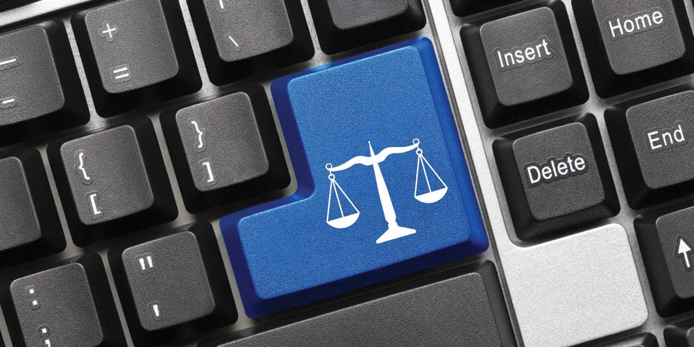

Aug 24
The algorithm of fairness
and a requiem to the brilliant mathematician Maryam Mirzakhani and to the brilliant entrepreneur Tony Hsieh

I am not among the most enthusiastic about NFT nor the most skeptical one to say that I am mitigated about all the opportunities that are foreseen with NFT. Blockchain as little as I know about it is a very powerful and simple technology that could allow us to build safer and decentralized platforms in which everybody is treated equally or according to given rules agreed upon the participation of users and given specific kind of behavior over time of such users. But what’s intricating me actually is the level of fairness of the algorithm that will be the core of this crypto-driven world and this self-intricating sentiment is more accentuated in me when it’s about crypto-based games and investment platforms like bitcoin, ripple, and consorts and leads me to be interested in fairness of algorithms and made me ask this question I would love to answer:
can we design a fair algorithm that could tell how fair is any other algorithms and compute the level of fairness of the algorithm whose fairness is assessed?
To say in a way that I think will be more understandable in my point of view and I hope in yours also, I would say that I am willing to design an algorithm that could tell if other algorithms are fair enough for users like us to engage into it and if an algorithm treats all its users with the same level of fairness. For example, for an advertising algorithm with a fairness estimation algorithm could tell if this advertising algorithm is exposing fairly all the ads of its range of users. For social media like Facebook or Twitter, this fairness estimation algorithm could tell if the underlying social algorithm is treating fairly all the profiles and social posts of its userbase. This is what I was trying to express with this tweet
in which I was using maybe unfairly the name and personality of Mark Schaefer who answered this
but the point was not about me but about all these users that are not fairly and equally treated by social media’s algorithms. I am almost sure that a Twitter account of an African like me is not treated as the same as a profile of an American or a European user. If it’s about Elon musk I am almost sure about the fact that I am advancing. Social algorithms don’t treat Elon's profile the same as mine that’s sure at least technically given his large number of followers and his popularity and that’s the same for Rihanna for trying to myself be fair about genres of the people I use as examples.
We could turn this question above into another form by for example asking how a gamer like me could know if a Crypto based game has a game engine and gameplays fair enough for a gamer to play it. How could this gamer be sure that the designers and developers of the game have not introduced into the game a system that is designed to make the gamer lose unfairly, a loss that could be about the amount of money that this gamer engaged because people are actually betting important amount of money in online games [What’s the total amount of fiat money introduced into the world cryptosystem? if you have the answer please I need it.] I think that I could take myself as an old experienced gamer an I used to look for cheat codes in magazines way before I got access to the internet and we all know that these cheat codes that were development utility were leaked by insiders of the game industry so how someone like me could trust enough a game before engaging my money into them for betting with other players that may have these kinds of cheat codes. I am not sure if other competitors aren’t favored by the underlying algorithm of the game or if these competitors don’t hold sheat code. Nothing is guarantying me this fact and that’s the core idea behind the algorithm of fairness that is helping users like me answer this question because one like me needs to be sure that games are random and fair enough before I play them.
The algorithm of fairness could allow all gamers to know the level of fairness of the game they playing and willing to play because these games have been tested upon publication by this algorithm of fairness before being compiled and hosted in a safe and incorruptible environment. I used Games as an example but this algorithm of fairness is about all kinds of algorithms.
I am actually thinking and working on this algorithm of fairness for designing this system of fairness and I think that Las Vegas’s casinos and their ranges of coin machines have something to teach me about fairness as well as the science of randomness and game theory. In fact, any kind of science that could help know more about fairness.
This is a futuristic project that is about building an engine of fairness by trying like how Tony Hsieh tried to build an engine of happiness but I hope that I will have a long life and that my end will not be as hard as the end of Tony but I was not in his place maybe his death was peaceful, I hope and believe that it could be. God bless Tony and forgive him because we all could see the impact of his work and passion. The length of life is not so a meaningful criterion because people like Tony had a short lifespan but they succeed at achieving something that could last forever. I was able to give the example of Myriam instead of Tony to be fair to both men and women and I would be staying on this topic of fairness of algorithms if I write about Maryam Mirzakhani because a deep understanding of mathematics like how maryam understood it is a key factor to success in this futuristic project of building an engine of fairness. So, God bless Maryam also because what she has achieved in her short lifespan is meaningful for our society and I am sure that it will last and that it will give birth to other meaningful things for our society and I which her husband and kids to be brave enough to live a life that she would be satisfied to see them living and I tempted to believe that those who pass away could see us.
I am not sure if I am good enough at mathematics like Maryam for designing and building this platform of fairness on which not only crypto-based games will be hosted but also algorithms of blockchain-based consumer experiences that will make the future world’s eCommerce more advantageous and fairer to consumers wherever these consumers are based and whatever their buying power is. This is a very big and abstract project for a small mind and incapable hands like myself but belief could drive someone further than where he or she was taking as unreachable. Then let’s go for this engine of fairness
The engine of fairness (algorithms of fairness) I explained above is also about a framework of fairness that other algorithms that will be the core components of the future connected world will use to learn how they can be fair in a situation that requires it and more than just a framework of fairness this framework will allow future AI solutions implement reasonability because being reasonable isn’t the same as being intelligent. For example, a self-driving car could be reasonable by letting other cars go before it even if all the parameters indicate that in fact it has all the priorities to go first but it stops and let others go because it is reasonable enough car to that’s it’s the safest choice for its occupants as well as this unreasonable car which behaved in a fashion that is not allowed or intended to behave badly this because this reasonable smart car I am trying to describe embeds into its system this fairness algorithm that has this framework of reasonability. I hope that you understand this paragraph that sounds like coming from a Hollywood fiction movie but I believe in the enabling power of technologies because most of the things we enjoy today were like impossible things that we could only see in Hollywood movies.
With this algorithm of fairness, consumers will not be tricked like how I was tricked yesterday by this retailer because all consumers will have fair prices that will make it useful (hugeful sound like a good name for who want it) to all consumers.
I was at two fingers to hide the fact that the importance of consumer blockchains was sincerely higgled to me by Gary Vaynerchuk but this consumer digital experience that I am actually crafted could be coupled with blockchain that will add value for consumers but I am almost sure that this fairness engine that I talking about will not be ready for this digital consumer experience to benefit from it in order to be fairer but I will do my best for it to be.
Thank you for reading this futuristic article about technology. if you want to make your life easy take algorithm of fairness = engine of fairness = framework of fairness and please forgive me for making your life difficult because that’s not what you seek.